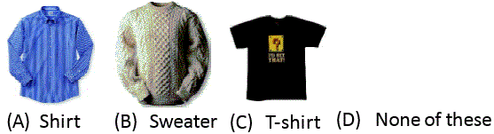
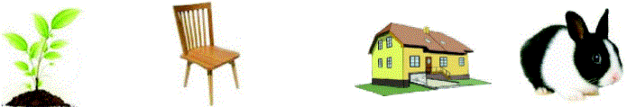
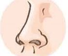
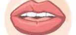
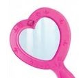
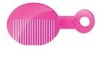
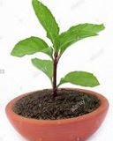
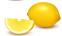
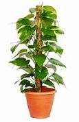

<!DOCTYPE html>
<html>
<head>
	<meta charset="UTF-8">
	<link href="../css/style_mock.css" rel="stylesheet" />
</head>
 <body>
<script type="text/javascript" src="../../mock_code.js"></script>
<script>

//todo - Read question from notepad
var questions = [
["On a rainy day, which of these will you take <br>","Umbrella","Sun Glasses","Binocular","Water Bottle","A"],
["Which one of the following clothes is specially made to worn during the winter season?","A","B","C","D","B"],
["Which of the following is used in winters?","Fan","Woolen clothes","Fresh water","None of these ","B"],
["Which of the following animal lives in the forest? "," Giraffe","Tiger","Zebra ","All of these ","D"],
["Given pot has 1 red ball and rest blue balls. How many are blue color balls? <BR>","7","6","5","4","A"],
["Unscramble the words given below to get the name of the home of the animal shown in the figure.<BR> <BR> 'ATSLBE'","Ebstla","Tebsla","Stable","Belsta","C"],
["Which of the following is true","All non living things are man-made things.","All living things are man-made things.","All living things are natural things","All non-living things are natural things","C"],
["Which of the following is the living thing","Cell phone","Ant","Toy","Fire","B"],
["Which one of the following can move from one place to another on its own -<BR>","Chair","Plant","House","Rabbit","D"],
["I  am green and small. I can make you cry. I am a _______.","Peas","Chilly","Ladyfinger","Spinach","B"],
["Which of the following is not a fruit?","Grapes","Watermelon","Cucumber ","Orange","C"],
["Following is created  - ","Humans","Robots","Nature","None","A"],
["Important thing in first aid box - ","Mobile","Ambulance Number","Surgical Needle","Bandage & Dettol","D"],
["Which of the following steps help in minimizing water pollution?","Do not allow animals and humans to take bath in river and other water bodies","Discharging industrial waste into water bodies","Discharging untreated sewage into water bodies","Washing clothes in the water bodies ","A"],
["Which body is used to see object.","","","","","B"],
["Which of the following is used to apply on lips","","","","","B"],
["Which of the following is an example of herb? ","","","","","A"],
["Sweater are worn in which season - - <BR> ","summer","rainy","winter","None","B"],
["Which of the following is not a vegetable? ","","","","","D"],
["What should we do before and after eating food?","Sleep","Change cloths","Wash hands","Exercise","C"],
["Identify the organ in following figure - <BR>","Kidneys","Heart","Liver","Brain","B"],
["Identify the organ in following figure - <BR>","Kidneys","Heart","Liver","Brain","D"],
["Following image is which type of building- <BR>","Church","Temple","Tomb","Gurudwara","C"],
["Following image is which type of building- <BR>","Church","Temple","Tomb","Gurudwara","A"],
["We do not eat seeds of - ","","","","","C"],
["We have a garden in backyard, If we don't give water everyday then it would result in - ","Fall of leaves","Increased growth of fruits","Increased growth of plants and trees","None","A"],
["Which of the following does not have shape - ","water","air","light","All of these","D"],
["Solid for of water is called - ","Ice","Stones","Vapor","Air","A"],
["We get electricity from water in ---","Lake","Pond","Dam","Sea","C"],
["Identify the plan - ","Creepers","Climbers","Shrubs","Herbs","B"],
["Stars are very big in size but they look tiny because - ","They are very near to Earth.","They are far away from Earth.","They are near to Sun.","They are far away from Sun","B"],
["Shape of the  _________ changes every night","Sun","Stars","Moon","Earth","C"],
["We need air to _________ a fire","light","water","air","none","A"],
["Which of these is not a wild animal","Lion","Tiger","Rhino","Cow","D"],
["__________ lives both on land and water.","Frog","Cow","Dog","Cat","A"],


]

</script>
<table><tr>
  <td class="timer-pic"></td><td class="timer-text"><p id="demo" ></p></td> 
</tr>
</table>
<h2 id="test_status"></h2>
<div id="test"></div>
</body>
</html>
